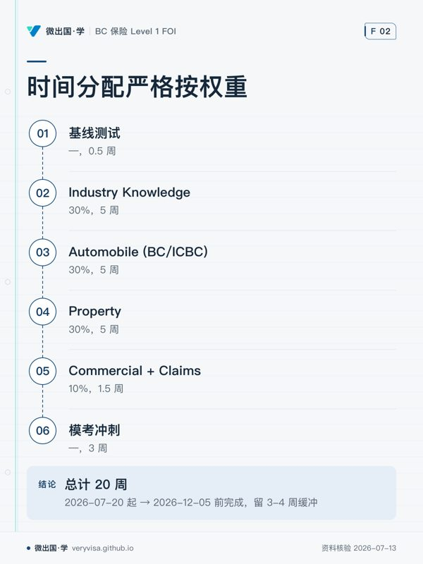
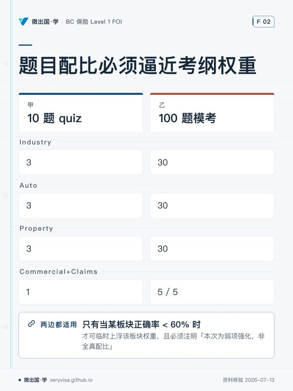
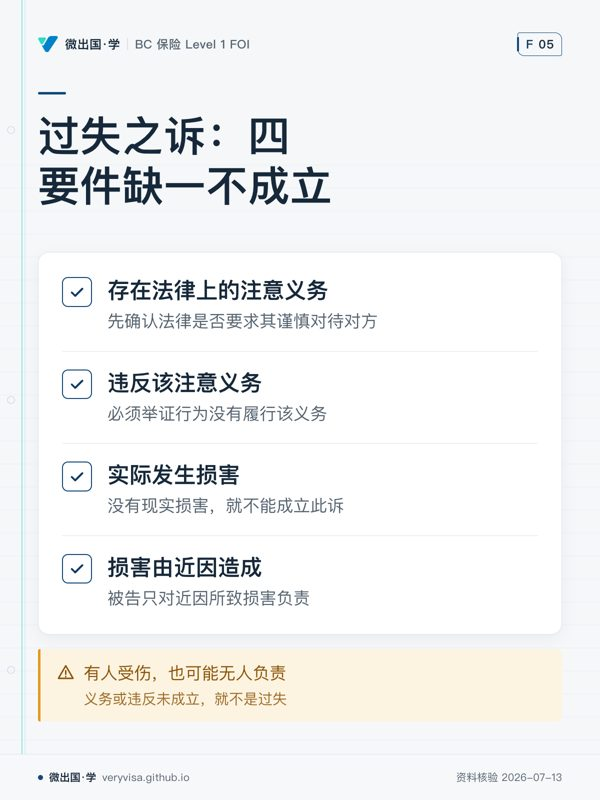
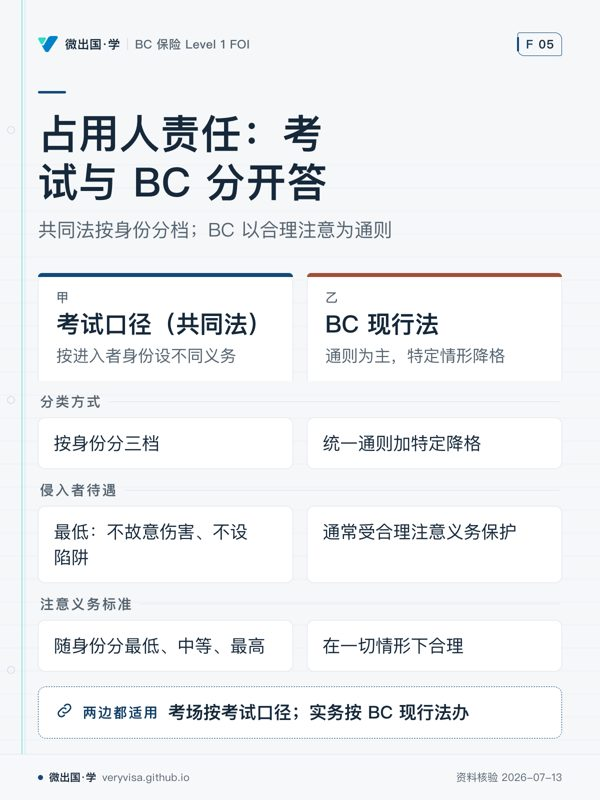

微出国 · 学
路线 › 知识卡
知识卡：不看正文也能拿到核心内容
全站 9 张知识卡，按页面分组。一张卡只画正文里的一段——一个判断、一条算法、一份清单；卡上每个字都能在对应页面的正文里找到（资料核验 2026-07-13）。
路线（首页）

- 先看先看权重栏，再对应题数栏，分清卷面重心。
- 易漏Auto 还覆盖消费者保护、共享出行、Enhanced Care 等子项。
- 下一步去讲义核对子项，再到练习按权重分配复习。
考纲权重：一切学习计划的地基

- 先看沿主线看各阶段周数，旁路任务不挤占备考时间。
- 易漏英语、面试、Council Rules Course、找 sponsorship 全程并行。
- 下一步去进度检查当前阶段，再到练习处理错题。

- 先看横向看同一板块在 quiz 与模考中的分配。
- 易漏不能因为话题「有意思」或「AI 熟」就多出题。
- 下一步去练习检查题目分布，再用模考验证全真配比。
四条持牌路径全对比


两本书说法不一致时该信哪个


法律责任与责任险

- 先看先按四关顺序浏览。
- 易漏最易错是见到伤情就选承担者。
- 下一步作答时逐关验证，不够就停。

- 先看先辨场景：试题还是客户咨询。
- 易漏最易混淆的是旧框架不能直接代替本省成文法。
- 下一步落笔前先选适用体系，再判断待遇。